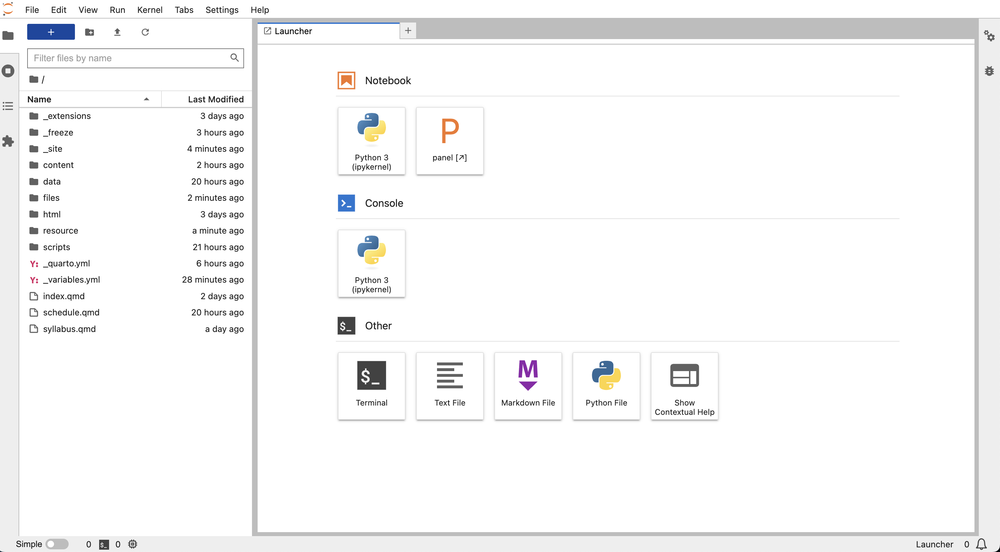

Using Jupyter notebooks and JupyterLab
In this course, we will perform most of our Python data analysis in files known as Jupyter notebooks. These files, which have an extension of “.ipynb”, combine live runnable code with narrative text (via the Markdown language), images, interactive visualizations and other rich output.
To work with notebook files, we will use an application called JupyterLab. JupyterLab is a browser-based interface that allows users to edit and execute notebook files. It can also handle all sorts of additional file formats and even has a built-in command-line feature.
On this page, I’ll discuss two common issues when starting out with Jupyter notebooks and JupyterLab: launching JupyterLab and ensuring the right files are available.
I strongly encourage you to go through the official documentation for JupyterLab:
Launching JupyterLab
The recommended approach for starting JupyterLab is to use the Miniforge Prompt on Windows or the Terminal app on MacOS. To do so, we simply need to activate our ‘musa-550-fall-2023’ environment and then launch the notebook.
From the command line, run:
mamba activate musa-550-fall-2023jupyter labThis will create the local Jupyter server and should launch the JupyterLab dashboard in a browser. If it does not open in a browser, copy the link that is output by the command into your favorite browser. Typically, the server will be running at http://localhost:8888. The dashboard should like look something like this:

On the left, you’ll see a file browser for the files in the folder where you ran the jupyter lab command. On the right you will see the “Launcher”, which allows you to easily create various types of new files. Click on the “Python 3” button under the “Notebook” section and you’ll create your first notebook. Alternatively, you can use the File -> New -> Notebook option from the menu bar. The new notebook, entitled “Untitled.ipynb”, is created within the same directory.
The “Launcher” also shows you what other actions you can take with JupyterLab, including creating text files, Python files (“.py” files), Markdown files, new terminals or Python consoles. One of the most powerful features of JupyterLab is its ability to handle multiple file formats at once. You can have multiple file types open in the main work area and drag and resize these files to view them all at once, as described here.
More info on the various components of the JupyterLab interface, with several useful videos, is available here.
Changing the JupyterLab start-up folder
By default, JupyterLab launches from the home directory. When you see the file browser on the left of the dashboard, you should see all of the files in this folder.
When working with weekly lectures or assignments, it is easiest to launch JupyterLab from the specific assignment or week folder that you are working on.
There are two options to do this:
- Change to the desired folder before launching JupyterLab
- Use the “notebook-dir” option to specify the desired folder when launching JupyterLab
Option 1
Step 1: Change to the desired directory
Let’s imagine we want to change to a folder named:
/Users/YourUserName/MUSA_550 (on a Mac),
or
C:\Users\YourUserName\MUSA_550 (on Windows)
If you need help finding the folder name’s path, this guide for Windows. (I usually use Method #2). On MacOS, you can use this guide to copy a folder’s path name.
Next, use the following steps:
Step 1. On Windows, open the Miniforge Prompt, or on Mac, open the Terminal.
Step 2. Navigate to the folder where the environment file is located. From the Prompt or Terminal run:
Windows
cd C:\Users\YourUserName\MUSA_550Mac
cd /Users/YourUserName/MUSA_550/Step 2: Launch JupyterLab
Now, type the following command, either in Anaconda Prompt or the Terminal:
jupyter labAnd you should now see the desired files in the file browser on the left sidebar of the JupyterLab interface!
Option 2
From the command line (Miniforge Prompt or Terminal), we can use the “notebook-dir” option to specify what working directory we want JupyterLab to use. For example, if we want to start from “/Users/YourUserName/MUSA_550/”, we could do:
Windows
jupyter lab --notebook-dir=C:\Users\YourUserName\MUSA_550Mac
jupyter lab --notebook-dir=/Users/YourUserName/MUSA_550/